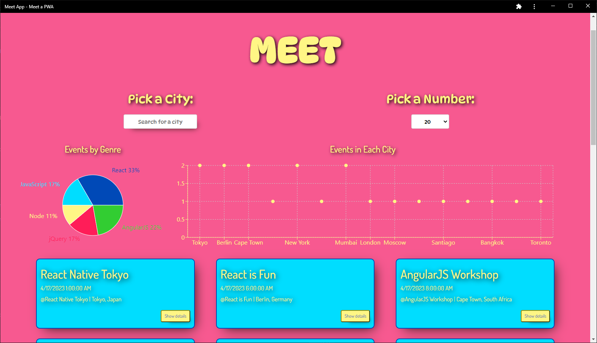

My Work
Pokedex
This is my first application made with JavaScript. The goal was to use HTML, CSS and JS to create a web application that loads data from an external API and allow users to interact with the data points in detail. The Pokedex app communicates with the PokeAPI to load information on the first original 150 pokemon, allowing the user to browse this list and click for more details on any specific pokemon.
Go Catch 'em All!Pokedex Repo on GitHub
myMovie App
Fully responsive front end application built with React, React Bootstrap, and Parcel that allows users to interact with data stored in myMovie API. I also built the server side component on a MERN Stack. Users can sign up, save and update personal information, as well as create a list of their favorites movies.
3..2..1..Action!myMovie Frontend Repo on GitHub
Movie-API repo on GitHub
Meet App
Serverless, progressive web application built with React. After logging in with Gmail users can use the app to retrieve data from a google calendar via Google API. Information is then displayed in multiple ways, including responsive charts from Recharts. This project also showcases TDD and incorporates Object Oriented Programming.
Check out the appMeet repo on GitHub